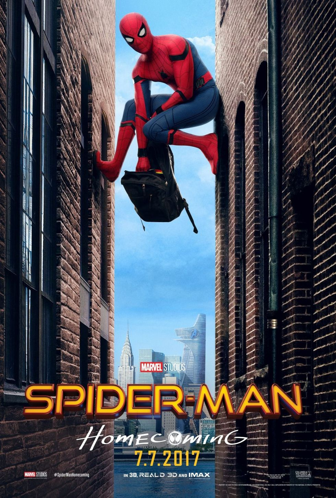
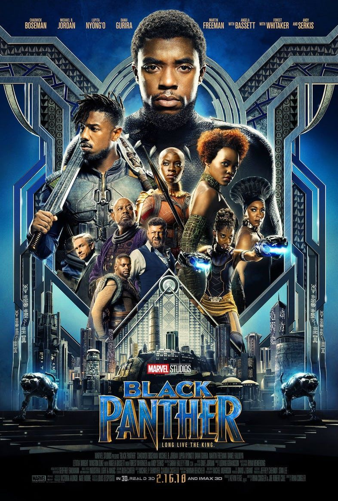

A lo largo de los años, a medida que el número de títulos publicados se incrementaba y aumentaba el número de historias pasadas, se fue haciendo más y más difícil mantener la coherencia interna y la continuidad. A diferencia de DC Comics (su principal competidor), Marvel nunca ha hecho ningún recomienzo de su continuidad. En los últimos años, se han hecho intentos menores de hacer historias más accesibles para nuevos lectores, como la línea Heroes Reborn, que narraban las aventuras de algunos de los principales héroes de la editorial, cuando fueron temporalmente exiliados en un universo de bolsillo, olvidando durante ese tiempo su pasado y empezando desde cero.
El Universo Marvel está fuertemente basado en el mundo real. La Tierra en el Universo Marvel tiene todas las características de la real: mismos países, mismas personalidades (políticos, estrellas de cine, etc.), mismos acontecimientos históricos (como la Segunda Guerra Mundial), y así sucesivamente. Sin embargo, también contiene muchos elementos de ficción: países como Wakanda y Latveria (naciones muy pequeñas), y organizaciones como la agencia de espionaje S.H.I.E.L.D. y su enemigo, HYDRA, y A.I.M. En 2009, Marvel oficialmente describió la geografía del mundo en una miniserie de dos partes, el Atlas de Marvel.
Además del universo Marvel principal hay más universos con los mismos personajes pero con diferentes características y orígenes, creados por la misma editorial pero sin ninguna relación con el universo Marvel principal. Por ejemplo: Ultimate Marvel, Marvel Zombies, etc.